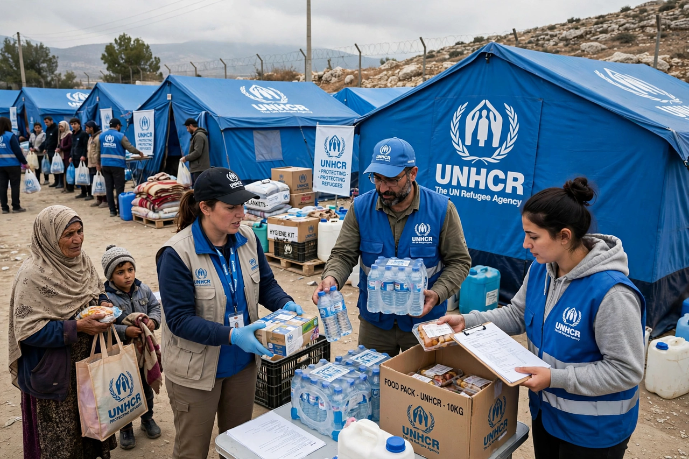

| Office of the UN High Commissioner for Refugees (UNHCR) | |
|---|---|
| Founded | 14 December 1950 |
| Headquarters | Geneva, Switzerland |
| High Commissioner | Filippo Grandi (since 2016) |
| Mandate | Protection and assistance of refugees, forcibly displaced and stateless people |
| Legal basis | 1951 Refugee Convention and 1967 Protocol |
| Honours | Nobel Peace Prize, 1954 and 1981 |

The Office of the United Nations High Commissioner for Refugees (UNHCR), known as the UN Refugee Agency, is a United Nations programme mandated to aid and protect refugees, forcibly displaced communities, and stateless people, and to assist in their voluntary repatriation, local integration, or resettlement. Created on 14 December 1950 by the UN General Assembly in the aftermath of the Second World War, it succeeded earlier bodies including the International Refugee Organization and the interwar Nansen International Office. UNHCR is headquartered in Geneva and works in well over a hundred countries; it has twice won the Nobel Peace Prize, in 1954 and 1981 — one of only a few organisations so honoured twice.
UNHCR's work rests on the 1951 Convention Relating to the Status of Refugees, originally limited to Europeans displaced before 1951, and its 1967 Protocol, which removed those limits. A refugee is a person outside their country owing to a well-founded fear of persecution for reasons of race, religion, nationality, membership of a particular social group, or political opinion. The core principle is non-refoulement: no refugee may be returned to a territory where their life or freedom would be threatened. Over time the General Assembly has extended UNHCR's concern to internally displaced persons (in coordination with the wider humanitarian system), returnees, and stateless persons, for whom it leads the campaign to end statelessness. Durable solutions pursued by the agency are voluntary repatriation, local integration in the host country, and resettlement to a third country — the last available to only a small fraction of refugees.
UNHCR registers refugees, runs and supports camps and urban assistance programmes, distributes shelter and relief items, funds education and healthcare through partners, and negotiates with governments for asylum space and protection. Major operations have included the Hungarian exodus of 1956, the Indochina boat people crisis, the Balkan wars, the Rwandan exodus of 1994, the Afghan and Iraqi displacements, the Syrian civil war (the largest refugee situation of the 2010s), the Rohingya flight from Myanmar in 2017, the Venezuelan outflow, and the displacement caused by Russia's invasion of Ukraine in 2022, the fastest-growing refugee crisis in Europe since 1945. By the mid-2020s the number of forcibly displaced people worldwide exceeded 110 million, including more than 30 million refugees under UNHCR's mandate.
The High Commissioner is elected by the General Assembly on the nomination of the Secretary-General; post-holders have included Gerrit Jan van Heuven Goedhart, Sadako Ogata (1990–2000), Ruud Lubbers, António Guterres (2005–2015), and, from 2016, Filippo Grandi. An Executive Committee of member states approves programmes and budgets. UNHCR is funded almost entirely by voluntary contributions from governments, with a small subsidy from the UN regular budget covering administrative costs; chronic funding gaps force rationing of food, cash assistance, and education in many operations. The agency's annual Global Trends report is the standard statistical source on forced displacement.
Since 1954 UNHCR has presented the Nansen Refugee Award, named for the explorer and first High Commissioner for Refugees of the League of Nations, Fridtjof Nansen, honouring extraordinary service to refugees; laureates have included Eleanor Roosevelt (first recipient), Médecins Sans Frontières, and Angela Merkel.